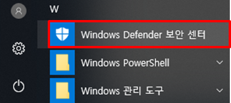
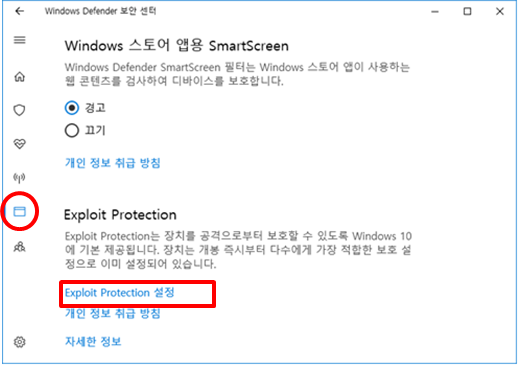
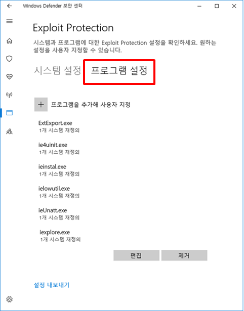
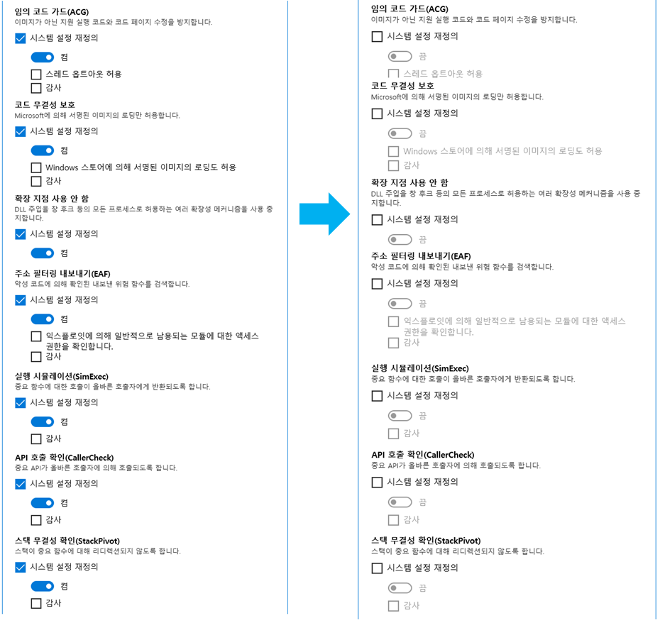

웹 보안 프로그램이 정상적으로 동작하지 않고 있습니다.
다음 조치를 취해 보십시오.
다음 조치를 취해 보십시오.
1. Windows Defender 의 Exploit Protection 설정을 해제하십시오

1) 시작 메뉴를 클릭하여 Windows Defender 보안 센터를 실행합니다.
2) 좌측에서 앱 및 브라우저 컨트롤 메뉴를 클릭한 후, Exploit Protection 설정을 클릭합니다.
3) 프로그램 설정을 클릭합니다. 목록에 표시된 각 프로그램을 클릭한 후, 편집 버튼을 클릭하여 다음 옵션이 선택되어 있는지 확인합니다. - 임의 코드 가드(ACG) - 코드 무결성 보호 - 확장 지점 사용 안 함 - 주소 필터링 내보내기(EAF) - 실행 시뮬레이션(SimExec) - API 호출 확인(CallerCheck) - 스택 무결성 확인(StacPivot)
4) 위 화면에 표시된 옵션이 선택되어 있는 프로그램의 경우, 옵션 선택을 해제하고 적용 버튼을 클릭합니다. 5) PC를 다시 시작합니다.